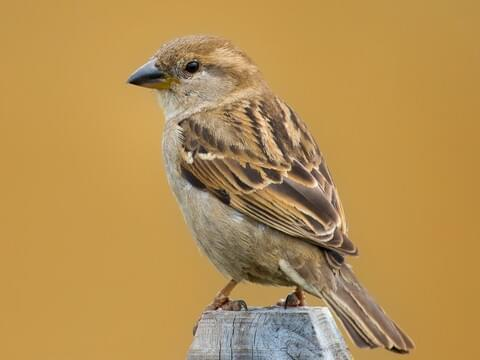
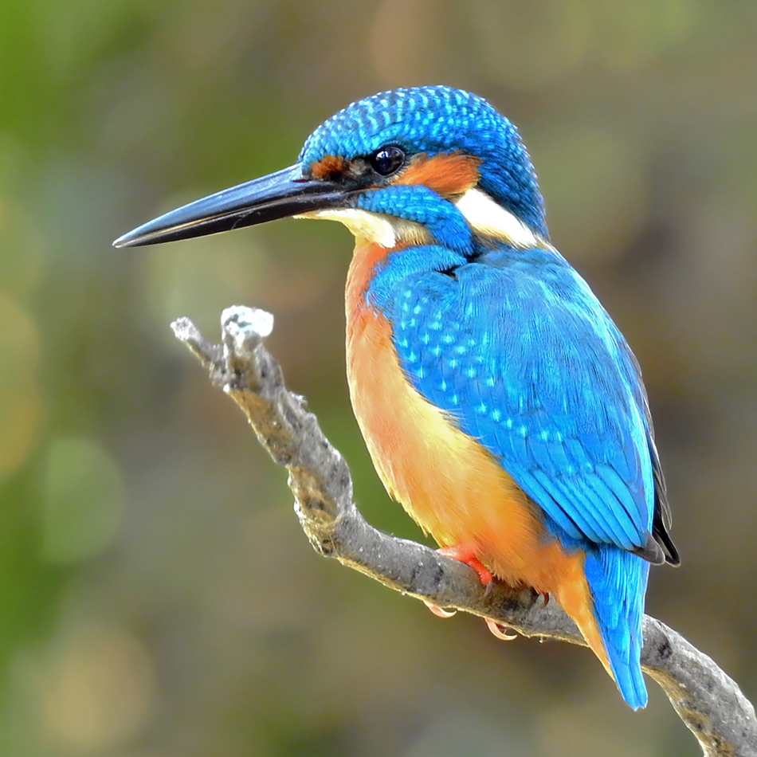
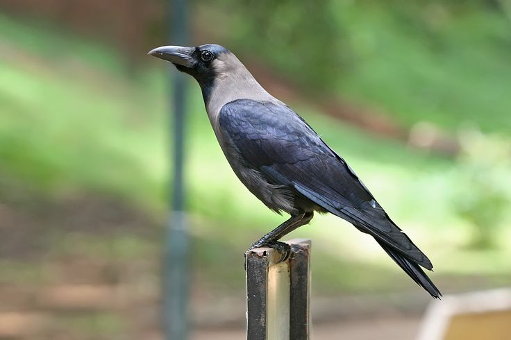

Sparrows
This is sparrow. Sparrow has 2 wings, one beak, 2 legs, Birds can fly to the high, also thier eye sight is great compainr to humans because they always see things too far from their, so because of this reason their eye sights are improved a lot! Bird can head sound minmum 20db, birds ara light in weigth so that they can fly easily, birds are very useful for nature
Author:- Dr Vikram Sharabhai
kingfisher
This is kingfisher. kingfisher has 2 wings, one beak, 2 legs, Birds can fly to the high, also thier eye sight is great compainr to humans because they always see things too far from their, so because of this reason their eye sights are improved a lot! Bird can head sound minmum 20db, birds ara light in weigth so that they can fly easily, birds are very useful for nature
Author:- Varah Mihir
Crows
This is crow. crow has 2 wings, one beak, 2 legs, Birds can fly to the high, also thier eye sight is great compainr to humans because they always see things too far from their, so because of this reason their eye sights are improved a lot! Bird can head sound minmum 20db, birds ara light in weigth so that they can fly easily, birds are very useful for nature, crow clean societies, crow has black color
Author:- acharya Shushrut
Peacock

This is peacock. peacock has 2 wings, one beak, 2 legs, Birds can fly to the high, also thier eye sight is great compainr to humans because they always see things too far from their, so because of this reason their eye sights are improved a lot! Bird can head sound minmum 20db, birds ara light in weigth so that they can fly easily, birds are very useful for nature